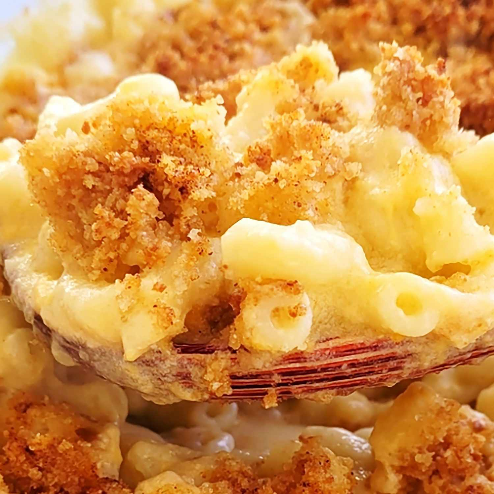

Mac-and-Cheese

This mac and cheese recipe with a buttered bread crumb topping is creamy and comforting. It's easy to make the
cheese sauce from scratch on your stovetop, starting with a roux and adding milk, Cheddar, and Parmesan,
resulting in a rich, decadent sauce that coats every nook and cranny of the noodles.
Ingredients
Macaroni and Cheese
- 8 oz uncoocked elbow macaroni
- 1/4 cup salted butter
- 3 tablespoons all-purpose flour
- 2 1/2 cups milk, or more as needed
- 2 cups shredded sharp Cheddar cheese
- 1/2 cup finely grated Parmesan cheese
- sald and ground black pepper
Bread Crumb Topping
- 2 tablespoons salted butter
- 1/2 cup dry bread crumbs
- 1 pinch ground paprika